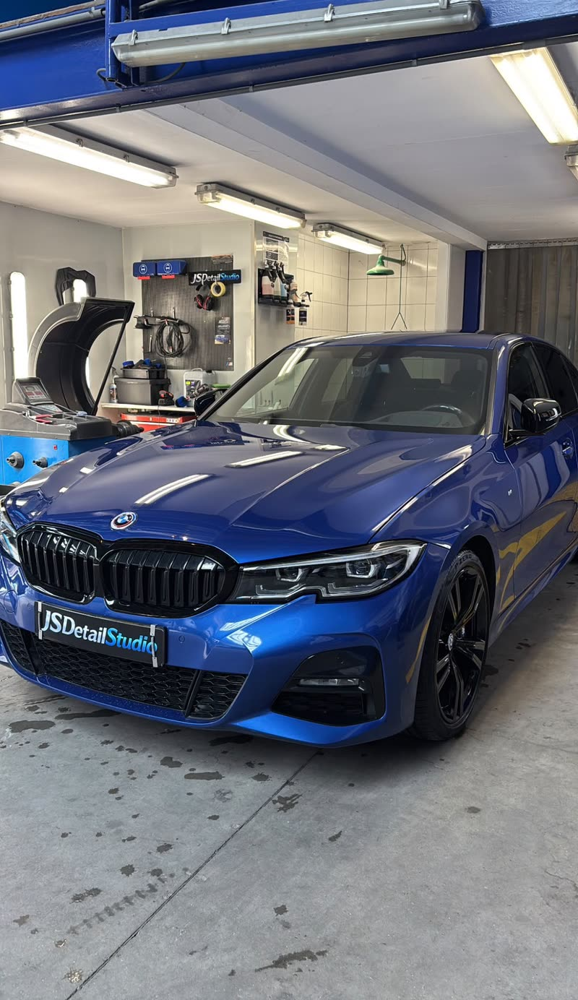

Diensten
Machinaal polijsten in IJmuiden
Machinaal polijsten haalt jaren van swirls, krassen en dofheid uit je lak en brengt de oorspronkelijke, diepe glans terug. In meerdere stappen en zorgvuldig afgestemd op jouw lak.

Wat het inhoudt
Wat is machinaal polijsten?
Bij machinaal polijsten werken we met een polijstmachine en verschillende pads en compounds een minuscule laag van de toplaag weg. Daarmee verdwijnen swirls (spinwebkrasjes), lichte krassen, hologrammen en watervlekken die de lak dof maken. Wat overblijft is een egaal, spiegelend oppervlak dat het licht gelijkmatig weerkaatst.
Elke lak is anders, dus we beginnen met een lakdiktemeting en een testvlak om de juiste combinatie te bepalen. Zo halen we het maximale resultaat zonder onnodig materiaal weg te nemen. Afhankelijk van de staat kiezen we voor een one-step correctie of een meertraps politoerbeurt.
We werken stap voor stap en controleren het resultaat tussendoor onder speciale beoordelingslampen, zodat elke swirl daadwerkelijk verdwijnt en niet alleen tijdelijk wordt verdoezeld met vulmiddelen. Waar nodig maskeren we kwetsbare randen, emblemen en rubbers af om beschadiging te voorkomen. Het is precisiewerk dat tijd kost, maar juist die zorgvuldigheid maakt het verschil tussen een snelle poetsbeurt en een echte lakcorrectie die je jarenlang blijft zien.
- Verwijdert swirls, krassen en hologrammen
- Herstelt diepe, egale glans en kleur
- Lakdiktemeting en testvlak vooraf
- Ideale basis vóór een keramische coating
Het resultaat
Een echte showroom-finish
Het verschil na het polijsten is direct zichtbaar: de lak wordt dieper, gladder en reflecteert scherper. Vooral op donkere kleuren komt het effect spectaculair tot zijn recht. Polijsten is bovendien de ideale voorbereiding op bescherming — op een gecorrigeerde lak hecht een keramische coating beter en oogt hij dieper.
Polijsten corrigeert de lak, een coating beschermt hem; vaak combineren we beide voor een resultaat dat lang mooi blijft. Rijd je een dagelijkse auto of een exclusieve wagen, dan stemmen we de aanpak daarop af. Zit er alleen oppervlakkig vuil op, dan volstaat soms al een exterieur detailing.
Auto’s uit IJmuiden, Velsen, Haarlem en Beverwijk vinden hun weg naar onze studio. Stuur een paar foto’s via WhatsApp — bij voorkeur in daglicht, zodat we de swirls goed zien — dan geven we een eerlijke inschatting van wat er mogelijk is. De prijs hangt af van de staat en grootte van je auto.